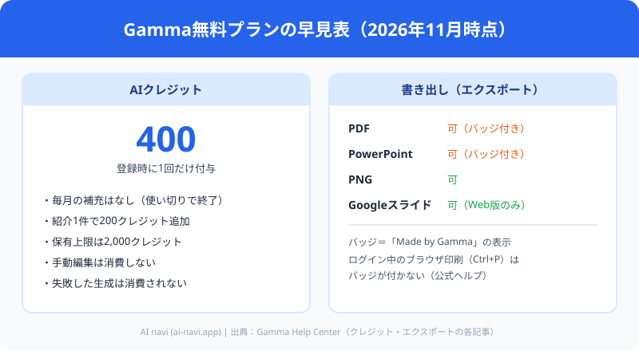

この記事は「Gammaを使うと決めた人」向けの操作ガイドです。イルシルとどちらにするか迷っている段階なら、先にイルシル vs Gamma徹底比較を読むと判断が早くなります。
Gammaとは？使う前に知っておきたい基本
Gamma（ガンマ）は、文章を入力するとAIがスライド・ドキュメント・Webページの形に組み立ててくれるサービスです。ブラウザで動くので、ソフトのインストールは要りません。スマホアプリも用意されています。
使い始める前に押さえておきたいのが、Gammaのスライドは「カード」という単位で作られる点です。PowerPointの1枚＝Gammaの1カードと考えるとわかりやすいのですが、カードは縦に長く伸ばせるため、PowerPointの16:9の枠とは考え方が少し違います。この違いが、あとで書き出すときのレイアウトのズレにつながります。
| 項目 | 内容（2026年11月時点） |
|---|---|
| 作れるもの | プレゼン資料・ドキュメント・Webページなど |
| 作成方法 | 生成（テーマから）／貼り付け（原稿から）／インポート（ファイルから） |
| 無料プラン | 登録時に400クレジット（補充なし） |
| 書き出し形式 | PDF・PowerPoint（PPTX）・PNG・Googleスライド（Web版のみ） |
| 共有方法 | 共有リンク・書き出しファイル |
| 有料プラン | Plus・Pro・Ultraなど（料金は公式の料金ページで確認） |
有料プランの金額はドル建てで、為替や改定の影響を受けやすいため本記事では載せていません。ほかのAIスライドツールと料金を並べて見たい方は「AIプレゼン作成ツール8選」が参考になります。
Gammaの使い方5ステップ（登録から完成まで）
ここからは、初めての人が1本目のスライドを完成させるまでの流れを順番に説明します。画面の文言は更新で変わることがあるため、ボタン名が違っても近い場所を探してみてください。
ステップ1：アカウントを作る
Gammaの公式サイトからGoogleアカウントかメールアドレスで登録します。登録が終わると無料プランのクレジットが付与され、すぐに作成画面へ進めます。クレジットカードの登録は無料プランでは求められません。
ステップ2：作り方を3つから選ぶ
新規作成ボタンを押すと、作り方を選ぶ画面になります。公式ヘルプで案内されている作成方法は次の3つです。
| 作り方 | 向いている場面 | ポイント |
|---|---|---|
| 生成 | テーマしか決まっていない | 1行のテーマから構成と本文をAIが考える |
| 貼り付け | 原稿やメモが手元にある | 原文をそのまま残すオプションもある |
| インポート | 既存のスライドや文書を作り直したい | 文書は見出しごとに1カード、スライドは1枚ごとに1カード |
中身が決まっている資料なら「貼り付け」が向いています。AIが勝手に話を広げすぎることが少なく、伝えたい内容を崩さずに見た目だけ整えられるためです。逆に、企画の叩き台やアイデア出しには「生成」が手早く使えます。
ステップ3：アウトラインを確認して直す
生成を選ぶと、いきなりスライドが完成するのではなく、まずアウトライン（各カードの見出しの一覧）が表示されます。ここが最も大事な工程です。見出しの順番を入れ替えたり、不要なカードを削ったり、足りない話題を書き足したりしてから次へ進みます。
アウトラインの段階で直しておけば、完成後に「構成ごと作り直す」必要が減り、クレジットの節約にもなります。カードの枚数もこの画面で調整できます。
アウトラインって飛ばしてもいいんですか？早く完成形を見たいんですが…
気持ちはわかりますが、無料プランでは飛ばさない方がいいです。生成し直すたびにクレジットが減るので、「見出しだけ先に固める」のが結局いちばん早く終わります。
ステップ4：テーマを選んで生成し、手で仕上げる
アウトラインが固まったら、配色やフォントのセットである「テーマ」を選んで生成します。生成後は、カードをクリックして文字を直接書き換えたり、画像を差し替えたり、カードの順番をドラッグで入れ替えたりできます。
公式ヘルプによると、手動での編集はクレジットを消費しません。「この文をもっと短く」程度の修正なら、AIに頼むより自分で書き換えた方がクレジットを温存できます。AI編集は、カード全体のレイアウトを変えたいときや、表を図に変えたいときなど、手作業だと時間がかかる場面に絞るのがおすすめです。
ステップ5：共有するか書き出す
完成したら、右上の「共有」から共有リンクを発行するか、「エクスポート」でファイルに書き出します。オンラインで見せるだけならリンク共有がいちばんきれいに表示されます。社内の決まりでPowerPointが必要な場合は、後半の書き出しの注意点を確認してください。
無料クレジットの仕組みと節約のコツ
Gammaの無料プランを使ううえで、一番つまずきやすいのがクレジットです。公式ヘルプの内容を整理すると、次のようになっています（2026年11月時点）。

| 項目 | 無料プラン | 有料プラン |
|---|---|---|
| 付与されるクレジット | 登録時に400 | 毎月付与 |
| 補充 | なし（使い切ると終了） | 毎月リセット・追加購入も可 |
| 紹介での追加 | 1件につき200（保有上限2,000） | — |
| 消費する操作 | AIでの作成・AI編集・AIでのカード追加・レイアウト変更・AI画像の生成や編集 | |
| 消費しない操作 | 手動での編集／エラーになったAI操作／AIが確認の質問を返した場合 | |
1回の生成で何クレジット減るかは、公式には固定の数字が示されていません。操作の種類・選んだAIモデル・生成する分量によって変わり、長い資料ほど多く消費する傾向があります。AI画像は生成前に消費量が表示されるので、そこで確認できます。
クレジットを減らさない5つのコツ
- アウトラインで構成を確定させる：完成後の作り直しがいちばん高くつきます
- 原稿があるなら「貼り付け」を使う：AIに考えさせる量が減り、やり直しも少なくなります
- 小さな修正は手で直す：手動編集はクレジットを使いません
- AI画像は必要なカードだけ：全カードに画像を生成すると消費がかさみます
- 最初は短めの資料で試す：5〜6枚程度で操作に慣れてから本番の資料を作ると失敗が減ります
無料の400クレジットは「お試し用の持ち分」と考えるのが現実的です。毎週のように資料を作るなら、早めに有料プランか別ツールを検討した方がストレスは少ないと思います。
日本語でスライドを作るときの注意点
Gammaは日本語の入力にも対応しており、日本語でテーマや原稿を渡せば日本語のスライドができあがります。ただし海外発のサービスなので、日本語ならではのズレがいくつか起こりやすくなります。生成後は次の点を見直してください。
1. 言い回しが不自然になることがある
英語的な発想で文章が組み立てられ、「〜を活用することで、〜を実現します」のような硬い表現や、カタカナ語の多い見出しになることがあります。社内向けの資料なら、ふだん使っている言葉に置き換えるだけで読みやすさが大きく変わります。
2. 指示しないと英語が混ざる場合がある
テーマを短く入力すると、見出しや画像内の文字に英語が混ざることがあります。プロンプトの最後に「すべて日本語で、見出しは15文字以内」と書き添えておくと、仕上がりがそろいやすくなります。
3. 数字・固有名詞・日付は必ず確認する
「生成」でAIに本文を考えさせると、それらしい数字や事例が入ることがあります。根拠のない数字は削るか、自分で調べた値に差し替えてください。社名・商品名・人名の表記ゆれもよく起こります。
4. 書き出すとフォントが変わることがある
公式ヘルプによると、PowerPointへの書き出しではテーマのフォントが埋め込まれますが、別の太さは近い太さに置き換わる場合があります。Googleスライドは埋め込みフォントを使わず独自のフォントに置き換えます。日本語は文字幅が変わると改行位置もずれやすいため、書き出したファイルは、実際に発表で使うPCで一度開いて確認しておくと安心です。
日本語の資料をメインに作るなら、国産ツールとの比較もしておくと後悔しません。
イルシル vs Gamma徹底比較｜AIプレゼンどっちがおすすめ？料金・機能・日本語テンプレートの違いを表で比べています。
スポンサー
PowerPoint・PDFに書き出す方法と注意点
「Gammaで作って、最後はPowerPointで提出したい」という人は多いはずです。公式ヘルプに沿って手順と注意点をまとめます。
書き出しの手順（Web版）
- 右上の「共有」をクリックし、「エクスポート」を選ぶ（右上の「…」メニューからも可）
- 形式を選ぶ（PDF／PowerPoint／PNG／Googleスライド）
- 範囲のプルダウンで「すべてのカード」を選ぶ（選ばないと表示中のカードだけになる場合がある）
- 必要なら画像の品質を調整する（通常は初期設定で問題ありません）
- ファイルが自動でダウンロードされ、同じものがメールでも届く
スマホアプリからも「共有」→「エクスポート」でPDF・PowerPoint・PNGを書き出せます。ただしアプリはGoogleスライドに非対応で、常に資料全体が書き出されます。
無料プランは「Made by Gamma」バッジが付く
無料プランのワークスペースからPDFやPowerPointに書き出すと、「Made by Gamma」のバッジが入ります。有料プランに切り替えると、その後の書き出しからは付かなくなりますが、以前に書き出したファイルのバッジは消えません。社外提出用の資料は、プランを決めてから書き出すのが無難です。
なお公式ヘルプには、ログインした状態でブラウザの印刷機能（Ctrl+P／Cmd+P）を使った場合はプランにかかわらずバッジが付かない、という記載もあります。PDFで足りる場面では選択肢になります。
PowerPointで崩れやすいポイント
| 要素 | 書き出し後の状態（公式ヘルプより） | 対処 |
|---|---|---|
| 表 | 編集できる表になるが、角丸は直角になる | 見た目優先なら「編集可能な表」をオフ |
| フォント | テーマフォントは埋め込み。他の太さは近い太さに置換 | 発表用PCで開いて確認 |
| グラデーションの見出し | 単色になる場合がある | PowerPoint側で色を調整 |
| スライドマスター | 空の状態で書き出される | 社内テンプレートに貼り直す |
| スピーカーノート | そのまま含まれる | — |
また、Gammaのカードは縦に長くできるため、文字量の多いカードは16:9の枠からはみ出したり、文字が小さく詰め込まれたりすることがあります。PowerPointでの提出が前提なら、1カードの文字量を少なめにしておくと書き出し後の手直しが減ります。
【PR】表紙画像や図版を作り込みたいなら「MiriCanvas」
テンプレートからプレゼン用の画像・SNS投稿・バナーまで作れるデザインツール。Gammaの資料に入れるオリジナル画像づくりに使えます。無料から始められます。
MiriCanvasを無料で試す →※広告を含みます
仕上がりが変わるプロンプト例5つ
「生成」でテーマを入れるとき、1行だけより条件を足した方が、狙った構成に近づきます。そのままコピーして、【 】内を書き換えて使ってください。
① 社内報告用
【新しい勤怠システム導入】について、社内の管理職向けに8枚の報告資料を作ってください。構成は「背景→課題→提案→費用→スケジュール→まとめ」。すべて日本語、見出しは15文字以内、1枚の本文は3行以内にしてください。
② 営業・提案用
【飲食店向けのホームページ制作サービス】を紹介する提案資料を6枚で。読み手は個人経営の店主。専門用語を避け、最後のスライドは問い合わせ方法にしてください。数字や実績は入れず、空欄にしてください。
③ 授業・研修用
【情報セキュリティの基本】を新入社員に説明する10枚の研修資料。各スライドに「よくある失敗例」を1つ入れ、最後に確認クイズを3問つけてください。
④ 原稿を貼り付けるとき
以下の原稿を、文章を変えずにスライドに分けてください。見出しごとに1枚、箇条書きは最大4項目。（この下に原稿を貼る）
⑤ PowerPoint提出が前提のとき
PowerPointに書き出して使います。1枚あたりの文字量を少なめにし、縦に長いカードは作らないでください。グラフは表で表現してください。
②のように「数字は入れずに空欄」と指定しておくと、AIがもっともらしい数字を作るのを防げます。プロンプトの書き方を基礎から知りたい方は「ChatGPTの使い方のコツ」も参考になります。考え方はGammaでもほぼ共通です。
ChatGPTで原稿を書いてから、Gammaに貼り付けるのもアリですか？
アリです。中身はチャットAIで詰めて、Gammaは見た目を整える役に回すと、Gammaのクレジットも節約できます。ただし原稿の事実確認は貼り付ける前に済ませておきましょう。
Gammaが合わないときの選択肢
Gammaは英語圏発のデザインが中心で、Webページのように見せるプレゼンが得意です。一方で、次のような場合は別のツールを併用した方がスムーズなこともあります。
| 困りごと | 検討したい選択肢 |
|---|---|
| 日本語のビジネス資料らしいデザインにしたい | 国産のAIスライドツール「イルシル」 |
| 無料クレジットを使い切った | 無料枠のある他のAIスライドツール |
| スライド以外の画像・バナーも作りたい | MiriCanvasなどのデザインツール |
| 会社のPowerPointテンプレートに合わせたい | 原稿だけAIで作り、PowerPoint側で仕上げる |
どのツールを選ぶかの比較は「イルシル vs Gamma徹底比較」と「AIプレゼン作成ツール8選」で詳しく扱っています。イルシルの操作手順を知りたい方は「イルシルの使い方」をどうぞ。
よくある質問（FAQ）
まとめ
Gammaは、テーマや原稿を渡すだけでスライドの形に組み立ててくれる便利なツールです。ただ無料プランのクレジットは登録時の400だけで補充がないため、「アウトラインで構成を固める」「小さな修正は手で直す」の2つを守るだけで、使える回数がかなり変わります。
Gammaの使い方 要点
- 作り方：生成／貼り付け／インポートの3種類。原稿があるなら貼り付けが確実
- 無料枠：登録時400クレジット・補充なし（2026年11月時点）。手動編集は消費しない
- 日本語：言い回し・英語の混入・数字・固有名詞・フォントを生成後に確認
- 書き出し：PDF・PPTX・PNG・Googleスライド。無料ではPDF・PPTXにバッジが付く
- PowerPoint提出前提：1カードの文字量を少なめにして、発表用PCで開いて確認
まずは5〜6枚の短い資料で操作に慣れるのがおすすめです。日本語資料が中心になりそうなら、イルシルの無料プランと並べて試して、手になじむ方を選んでください。
参考：
Gamma Help Center「How do AI credits work in Gamma?」
Gamma Help Center「How do I export my gamma?」
Gamma Help Center「How to create a new presentation, document, or webpage with Gamma AI」
Gamma Help Center「Can I import slides or documents into Gamma?」
※料金・クレジット・機能は2026年11月時点の情報です。最新の内容は公式サイトでご確認ください。